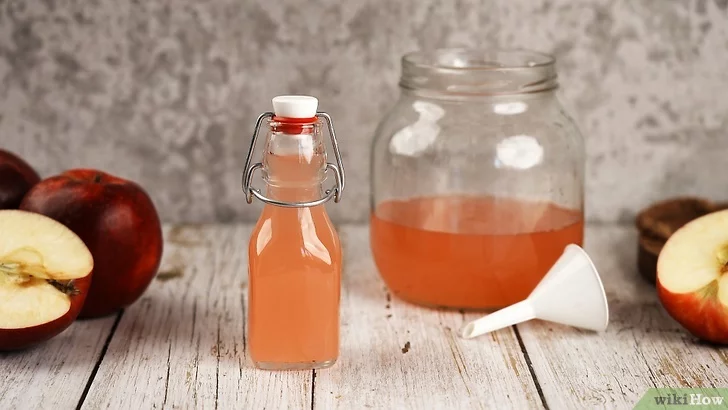

Apple Cider Vinegar!
Home

Description
Apple cider vinegar, or cider vinegar, is a vinegar made from cider, and used in salad dressings, marinades, vinaigrettes, food preservatives, and chutneys.Making apple cider vinegar is surprisingly easy and very similar to brewing kombucha or cider!
Ingredients
- Apples
- Water
- Sugar or Honey
Steps
- Chop 4-5 rinsed apples into roughly 1–2 in (2.5–5.1 cm) pieces.
- Add the apples to a sterilized 64 oz (~2 L) glass jar, with cool water.
- Cover the jar with a cheesecloth.
- Place the jar in a warm, dark place for 3-4 weeks and stir it once a day.
- Strain the apples out of the mixture when it smells like vinegar.
- Return the liquid to the fermenting jar and let it sit for another 2 weeks.
- Strain and store the vinegar in a sterilized jar. After 2 weeks, your apple cider vinegar’s all done!